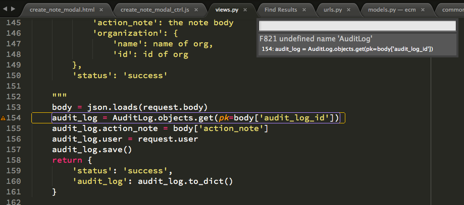
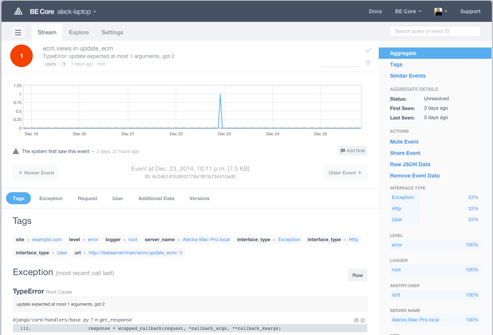
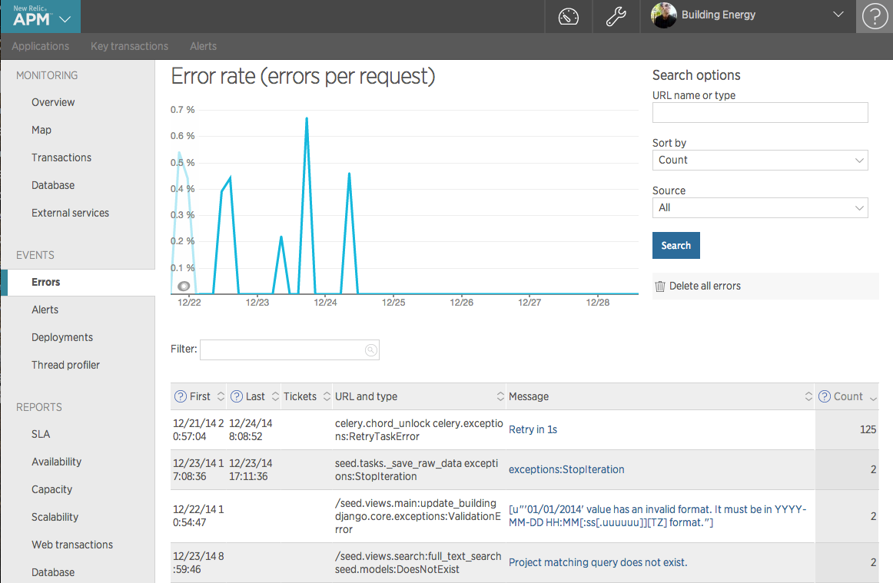
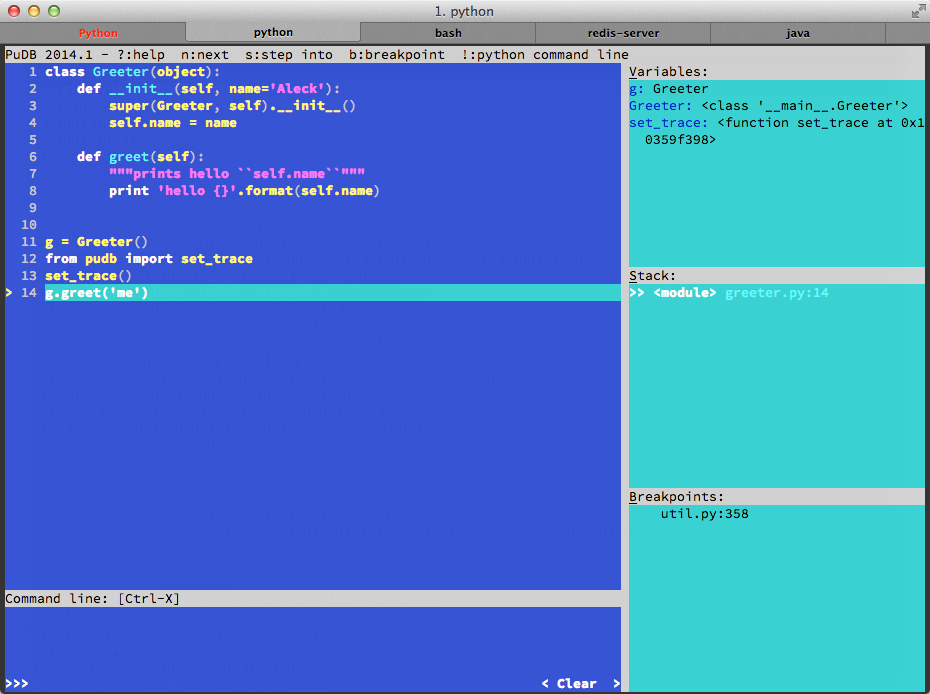

PDB PDX
debugging for humans
Created by Aleck Landgraf and friends / @aleck_landgraf / aleck.me/pdbpdx
about me
- VP Software Engineering at Building Energy
- startups for the last 4+ years
- mostly developing with python, Django, and JS
- ping ping advocate
Why debugging? WTF?
for j in js:
mn = j.get('model','unknown')
js2[mn]=js2.get(mn,[])+[j]
steps to debugging
- linter
- print debug info
- read the traceback
- jump into the shell
- debugger
- add tests
linter
your first line of defense
here's what mine looks like
python debug 101
print!
for j in js:
mn = j.get('model','unknown')
js2[mn]=js2.get(mn,[])+[j]
for j in js:
mn = j.get('model','unknown')
js2[mn]=js2.get(mn,[])+[j]
print 'WTF', js2.get(mn,[])+[j]
better yet
for j in js:
mn = j.get('model','unknown')
js2[mn]=js2.get(mn,[])+[j]
print '\n\nline 72 of time_utils.py WTF', js2.get(mn,[])+[j], '\n\n'
better still
and of course, you might want to use logger
import logging
logger = logging.getLogger(__name__)
logging.basicConfig(format='%(filename)s:%(lineno)s - %(message)s')
for j in js:
mn = j.get('model','unknown')
js2[mn]=js2.get(mn,[])+[j]
logger.debug(js2.get(mn,[])+[j])
what to print?
tracebacks
get comfortable reading these
File "django/core/handlers/base.py", line 112, in get_response
response = wrapped_callback(request, *callback_args, **callback_kwargs)
File "seed/utils/api.py", line 91, in _wrapped
return fn(request, *args, **kwargs)
File "annoying/decorators.py", line 164, in wrapper
response = func(request, *args, **kwargs)
File "superperms/orgs/decorators.py", line 197, in _wrapped
return fn(request, *args, **kwargs)
File "django/contrib/auth/decorators.py", line 22, in _wrapped_view
return view_func(request, *args, **kwargs)
File "ecm/views.py", line 150, in update_ecm
ecm.mapped_data.update(ecm_data.get('mapped_data'), {})
TypeError: update expected at most 1 arguments, got 2
use an error logging service
like getsentry.com
or newrelic.com
entering the shell
some regular python Kung Fu
- _
- obj.__dict__
- dir(obj)
```pycon In [1]: requests.get('http://api.openweathermap.org/data/2.5/weather?id=5746545') Out[1]: Response [200] In [2]: response = _ ```
dir and __dict__
```pycon In [1]: class Greeter(object): def __init__(self, name='Aleck'): super(Greeter, self).__init__() self.name = name def greet(self): """prints hello ``self.name``""" print 'hello {}'.format(self.name) In [2]: d = Greeter() ```
dir
```pycon In [3]: dir(d) Out[3]: ['__class__', '__delattr__', '__dict__', '__doc__', '__format__', '__getattribute__', '__hash__', '__init__', '__module__', '__new__', '__reduce__', '__reduce_ex__', '__repr__', '__setattr__', '__sizeof__', '__str__', '__subclasshook__', '__weakref__', 'greet', 'name'] ```
__dict__
```pycon In [4]: d.__dict__ Out[4]: {'name': 'Aleck'} ```
ipython
with ipython's rich feature set
- tab completion
- ? and ??
- %history
- ... so much more
tab completion
```pycon In [1]: import time In [2]: time. ```
TAB
```pycon In [2]: time. time.accept2dyear time.clock time.gmtime time.sleep time.struct_time time.tzname time.altzone time.ctime time.localtime time.strftime time.time time.tzset time.asctime time.daylight time.mktime time.strptime time.timezone ```
? and ??
```pycon In [1]: class Greeter(object): ... def greet(self): """prints hello ``self.name``""" print 'hello {}'.format(self.name) In [2]: d = Greeter() ```
?
```pycon
In [3]: d.greet?
Type: instancemethod
String form:
??
```pycon In [4]: d.greet?? Type: instancemethod ... Source: def greet(self): """prints hello ``self.name``""" print 'hello {}'.format(self.name) ```
picking a debugger
pdb
“batteries included”
```python from pdb import set_trace set_trace() ```
ipdb
all the wonder of ipython plus some neat tricks:
- pip install ipdb
- 90% use case:
```python from ipdb import set_trace set_trace() ```
- `with launch_ipdb_on_exception():`
- ipython --pdb main.py
pudb
peanut butter demo time
common debugging patterns
handle errors over long iterations
```python for u in users: u.set_home_location() ```
BLAMO!!! OK, try this...
```python for u in users: try: u.set_home_location() except KeyError: import pudb; pudb.set_trace() ```
Can't run in the shell. OK, try this...
```python for u in users: try: u.set_home_location() except KeyError: from traceback import print_exc print_exc() # or log ```
What to do with pdb namespace collisions?
```python n = len(cols) ```
```python # assuming ipython shell in pudb my_n = locals()['n'] # or use ! !n ```
slow code? profile it
count and time things!
reduce your footprint
- map vs. imap
- items vs. iteritems
- stream files and chuck large DB queries
steps to prevent debugging
- you have a linter, right?
- access to all errors and tracebacks?
- flake8 should pass for tests to pass
- draw a line in the sand: enforce code coverage
- add tests to prevent regressions
a quick note on coverage

How much is enough?
```console Name Stmts Miss Cover Missing ------------------------------------------- espm 8 0 100% espm.espm 97 3 97% 109-112 espm.models 276 0 100% espm.util 19 0 100% ------------------------------------------- TOTAL 400 3 99% ---------------------------------------------------------------------- Ran 32 tests in 0.255s ```
```console python setup.py nosetests --cover-min-percentage=100 ```
Stellar Resources
THE END
comments
aleck.landgraf@gmail.com